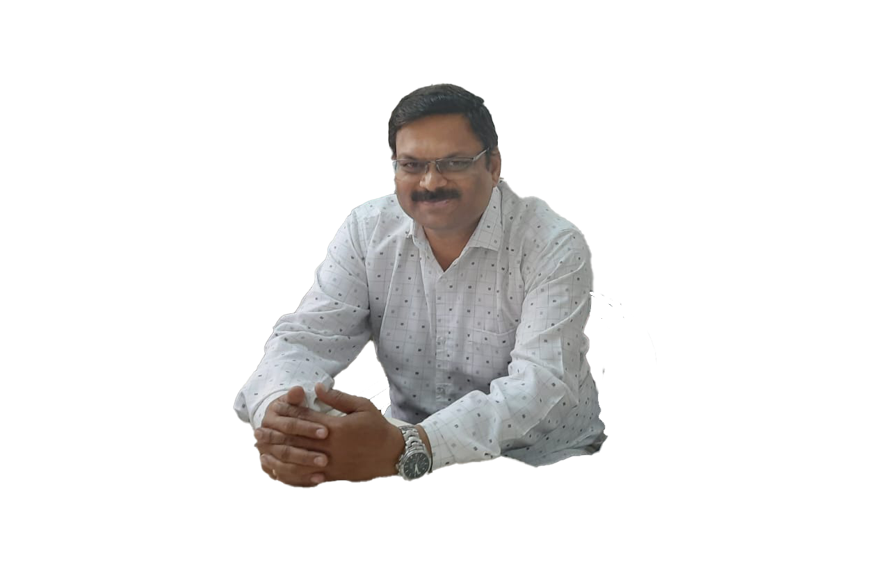

Experience

What I do
Expert in creating machine learning models and retraining systems, exceptional skills in statistics and programming, Research and implement appropriate ML algorithms and tools
Build and maintain data systems. construct datasets and analyze and support company requirements. Implement methods to improve data reliability and quality.
Understanding about depth and breadth of computer vision and deep learning algorithms. Drive computer vision solutions.
Design and developed user friendly websites, including optimized check-out page, Well versed with SEO.
My Resume
Extra Contributions
Activities